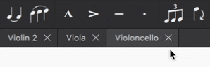
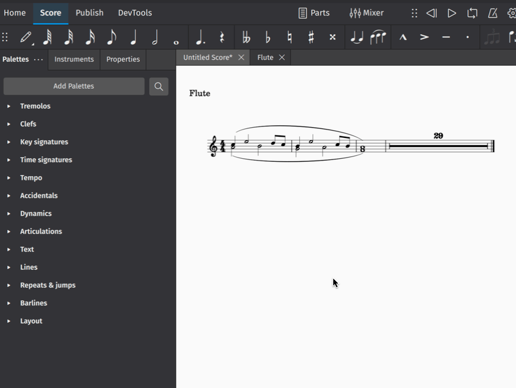
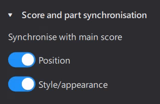
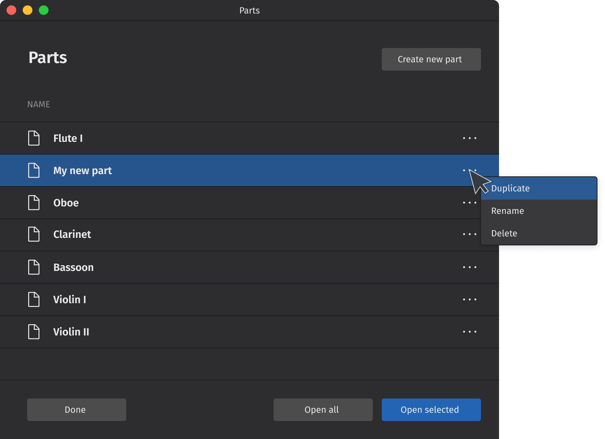

分谱
打开分谱
MuseScore 4 会为乐谱中的每件乐器自动创建一个独立的（默认）分谱。
要一次打开所有分谱：
- 单击工具栏中的 分谱（这会打开 分谱 对话框）
- 单击 全部打开
要打开单个分谱：
- 单击工具栏中的 分谱
- 单击一个分谱将其选中
- 单击 打开所选
你也可以选择特定分谱一次打开。按住 Ctrl（Mac：Cmd）的同时选择你要打开的分谱，然后单击 打开所选。你也可以通过单击第一个分谱、按住 Shift 再单击最后一个来选择一个连续范围的分谱。

关闭分谱
单击分谱标签页中的 X 关闭按钮即可关闭分谱。

注意，你对分谱所做的更改会随该分谱一起保存，下次从 分谱 对话框打开时仍可找到。
创建自定义分谱
分谱 对话框与 排版 面板 紧密集成。这种集成让你可以轻松地用乐谱中任意乐器组合创建分谱。
在 MuseScore 4 中自定义分谱有两种方式：使用默认（即现成）分谱来显示其他乐器，以及创建全新的分谱。
在默认分谱中显示乐器
如前所述，MuseScore 4 会自动为乐谱中的每件乐器创建一个新的（默认）分谱。你只需从 分谱 对话框中打开分谱即可。
实际上，每个默认分谱已经包含你乐谱中的 所有 乐器——它们只是被隐藏起来了（当然，所选的该分谱乐器除外）。
这意味着你可以在任何默认分谱内部“显示”其他乐器。操作如下：
- 打开一个分谱（如上文所述）
- 选择 排版 面板
- 单击另一件乐器旁边的眼睛图标
该乐器现在就会出现在所选分谱中。
这使得创建自定义分谱成为一个极其灵活的过程。显示或隐藏其他乐器是完全非破坏性的，也就是说，你可以自定义每个分谱中的每件乐器，只显示或隐藏你想给不同演奏者（或不同音乐项目）看到的内容，而无需每次都创建全新的分谱。
创建新分谱
你可以从零开始创建一个完全“空白”的分谱，从而完全控制它显示哪些乐器。操作如下：
- 单击工具栏中的 分谱 打开 分谱 对话框
- 单击 创建新分谱
- 给你的新分谱命名
- 单击 打开所选
你的新分谱现在会在 乐谱 标签页中打开，但看起来不包含任何乐器。要向此分谱添加乐器：
- 转到 排版 面板
- 单击每件你希望出现在分谱中的乐器旁边的眼睛图标
选择每个分谱中出现的声部
有时需要从包含多个声部的谱表中创建单独分谱。例如，你可能想为在主乐谱中共享一条谱表的管弦乐演奏者提取单独分谱（如长笛 I 和长笛 II）。或者你可能想从合唱乐谱中创建单独的声乐分谱，例如四个声部记写在两条谱表上的情况。
你需要先创建（见上文）或复制（见下文）一个分谱。然后要选择哪些声部出现在分谱中：
- 打开一个分谱（见上文）
- 转到 排版 面板
- 单击三角形下拉图标展开一件乐器
- 单击谱表名称旁边的设置图标
- 在 乐谱中可见的声部 下勾选/取消勾选复选框，选择你希望出现在分谱中的声部

对分谱应用样式
各种刻谱元素的样式设置可以专门应用到分谱，而不影响主乐谱。
要更改特定分谱的样式设置：
- 确保已打开一个分谱，且该分谱当前在 乐谱 标签页中被选中
- 转到 格式 → 样式...
- 进行你想要的样式设置更改（适用的更改会实时显示在乐谱中）
- 单击 确定 确认更改
你在此对话框中所做的更改只会影响 乐谱 标签页中选中的分谱。如果你希望更改影响 所有 分谱（但不影响主乐谱），请在单击 确定 之前选择 应用到所有分谱。
在 模板与样式 中了解关于保存和加载默认样式设置的更多信息。
管理乐谱与分谱的同步
（本节介绍 MuseScore 4.2 中新增或大幅增强的功能。）
当你更改乐谱内容时——例如添加或删除项目，或更改音符的音高和时值——这些更改始终会反映到分谱中，反之亦然。
不过，正如你可以对乐谱和分谱应用不同样式一样，你可能希望某些项目的属性（位置、样式/外观）在乐谱和分谱之间有所不同。因此：
- 当你在 分谱 中更改某个项目的任何属性时，该更改 不会 反映到乐谱中，并且该项目会被标记为与乐谱“不同步”（如果尚未如此）；
- 当你在 乐谱 中更改某个项目的任何属性时，该更改 会 反映到分谱中，除非该项目已经不同步。
当分谱中的某个项目不同步时，选中时它的颜色会变为橙色，并且根据已更改的属性，属性 面板中 乐谱与分谱同步 下的开关会关闭：

位置 指偏移、前置间距、最小间距、自动放置、方向（上/下、上方/下方）、对齐方式，以及特定类型特有的一些其他属性。样式/外观 基本上是所有其他属性。
如果你在分谱中更改了某个项目，但希望该项目与乐谱重新同步，可以重新打开这些开关，把这些属性重置为与乐谱一致。
文本项目还有第三个开关 文本，用于控制文本项目内容和格式的同步。与其他属性不同，在分谱中更改不希望反映到乐谱的文本项目之前，必须手动关闭此开关。
从分谱或乐谱中排除项目
在某些情况下，你可能希望某些项目出现在乐谱中但完全不出现分谱中，或出现在分谱中但不出现在乐谱中。这与简单地把项目设为不可见不同，因为不可见项目有时仍会影响排版。
此选项适用于框架、谱号变更、八度线、谱表文本和系统文本。对于谱号和八度线，从一个视图排除这些项目会导致那里的音符相应重新定位。
要从分谱中排除一个项目：
- 在乐谱中选择该项目
- 打开 属性
- 在 乐谱与分谱同步 下，勾选 从分谱中排除
要从乐谱中排除一个项目：
- 在分谱中选择该项目
- 打开 属性
- 在 乐谱与分谱同步 下，勾选 从乐谱中排除
重命名、复制和删除分谱
这些操作都在 分谱 对话框中进行（可从工具栏中的 分谱 按钮访问）。

只需单击所选分谱旁的“三个点”菜单图标即可显示其选项。注意，只有 新建的分谱（通过单击 创建新分谱 按钮创建）可以删除。所有分谱都可以复制或重命名。